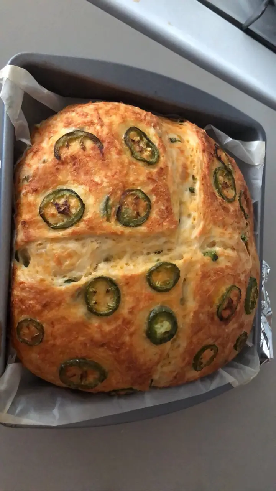

Cheddar Jalapeño Bread
Return to Home
Here is one of my favorite bread recipes. It is an easy no-knead Cheddar Jalapeño Bread recipe. The original can be
found here. I find that it is very good with
a little honey-butter or berry jam.

Ingredients
Bread
- 3 1/2 Cups bread flour
- 2 Cups shredded sharp cheddar cheese
- 2x Jalapeños, seeded and coarsely chopped
- 1 Tablespoon Kosher salt
- 2 Cups warm water
- 2 1/4 Teaspoon instant yeast
Topping
- 1/2 Cup shredded shar cheddar cheese
- 1x Jalapeño, sliced
- 1 Tablespoon olive oil
Directions
-
In a large bowl, combine the bread flour, 2 cups of cheddar cheese, the chopped jalapeños, and salt. Stir well.
-
In a separate large bowl, combine the warm water and yeast. Pour the flour mixture on top of the water and use a
silicone spatula to stir until the dough comes together.
-
With the spatula, fold the dough around the edges of the bowl toward the center, rotating the bowl each time and
folding a total of 8 times. Cover with a kitchen towel and let rest in a warm place for 60 minutes, or until
almost doubled in size.
-
Using the spatula, fold the dough toward the center again 8 more times. Cover with the towel and let rest for 30
minutes.
-
Place the Dutch oven and lid in the oven and preheat to 450˚F for 30 minutes.
-
Lightly flour a clean work surface and your hands. Carefully peel the dough out of the bowl and onto the floured
surface. Flip over and carefully brush away excess flour. Fold the edges of the dough towards the center 8 times,
then flip over the dough and transfer to a piece of parchment paper.
-
Brush the top of the dough with the olive oil, so the cheese will stick. Sprinkle the remaining ½ cup (50 g) of
cheese on top. Use a sharp knife to score the bread with an “X”, which will allow steam to escape. Arrange the
jalapeño rings on top of the cheese.
-
Carefully remove the Dutch oven from the oven and use the parchment to lift the bread into the pot. Cover with the
lid and bake for 30 minutes, then remove the lid and bake for 20 more minutes, until the bread is golden brown.
-
Carefully slide the bread out of the pot and onto a wire rack. Remove the parchment paper and let the bread cool
for at least 1 hour before slicing
- Slice the bread and serve as desired.
- Enjoy!